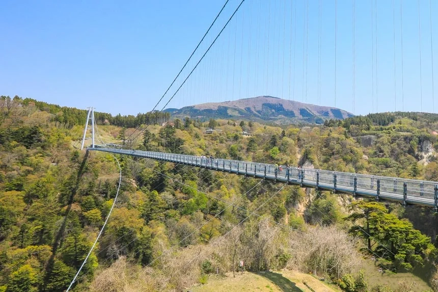
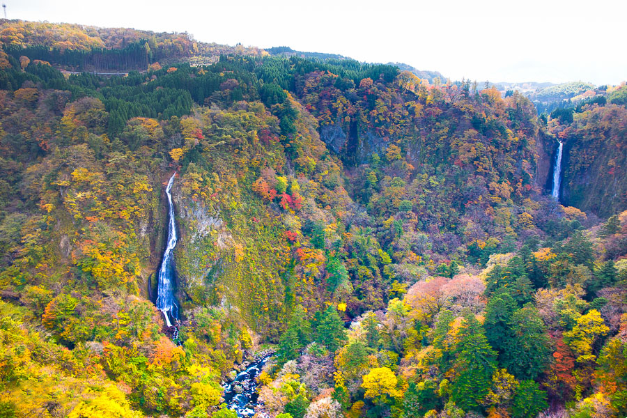
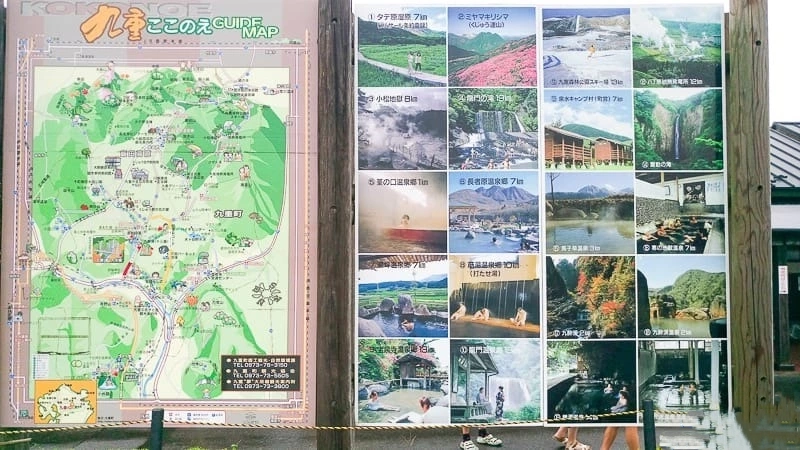

九重夢大吊橋，滿滿初夏的嫩綠色
2006年開通的九重夢大橋是民間集資蓋，為了中村跟北方兩地的交通與振新經濟所蓋的，走在陸橋上便可以欣賞兩大日本美景，日本瀑布百選的震動瀑布及九醉溪溪谷景色。是大分縣裡相當具有人氣的景點。

九重大橋介紹
九重夢大吊橋是大分縣有名的景點之一，是全日本第一高的步行者吊橋，橫跨九醉溪谷，九重夢大橋除了觀看一望無際的原始森林，也能看到日本百選瀑布「震動之瀑・雄瀑」和「雌瀑」，四季都有不同美景，其中秋天季節是最多遊客前往季節，滿山滿谷的紅葉楓紅，令人屏息，橋上風景
走到吊橋中間後，從橋體往下望，可以看到秋天限定的紅黃橘綠彩色山谷，橋面是做成水溝蓋的鏤空鐵格網狀，認真往下看，下方的九醉溪若隱若現。震動之瀑
展望台的瀑布是雄瀑因為落差大的關係，水量大的時候產生的振動是相當有魄力的，這個瀑布也是九州屈指可數的有名瀑布，瀑布還有個龍神的傳說，中村側展望廣場便有龍神的祭祀祀堂

大展望台看吊橋
走到吊橋底後可以從出口出去到另一側的展望台，這裡可以從另一面欣賞九重夢大吊橋；出去後要再入場，一樣是持原本購買的入場券驗票，所以票要收好別丟了！大橋週邊景點
1.九重森林公園滑雪場
2.小松地獄
3.龍門の滝(瀑布戲水區)

地圖